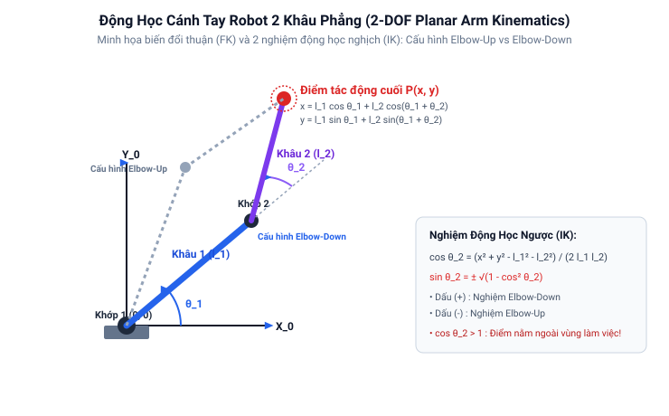

16.1 So sánh Robot Di động ($SE(2)$) và Cánh tay Thao tác ($SE(3)$)
Khác với robot bánh xe di chuyển trên mặt sàn phẳng 2D với 3 bậc tự do $(x, y, \theta)$, cánh tay cơ khí thao tác (Articulated Manipulator) gồm chuỗi các thanh nối cứng (Links) liên kết qua các khớp động học (Joints) để điều khiển đầu kẹp thao tác (End-Effector) trong không gian 3 chiều với 6 bậc tự do $(x, y, z, \text{roll}, \text{pitch}, \text{yaw})$.
16.2 Động học Thuận Cánh tay Phẳng 2 Bậc tự do (2-DOF Planar Arm)
Xét cánh tay phẳng 2 bậc tự do với chiều dài hai thanh nối lần lượt là $l_1, l_2$ và góc quay của các khớp là $\theta_1, \theta_2$:

16.4 Động học Ngược (Inverse Kinematics) & Hai Nghiệm Đối xứng
Động học ngược là bài toán ngược lại: cho trước tọa độ mong muốn $(x, y)$, tìm các góc khớp $(\theta_1, \theta_2)$ để đặt đầu kẹp chính xác vào vị trí đó. Áp dụng định lý hàm số Cosine cho tam giác tạo bởi gốc tọa độ, khớp 2 và đầu kẹp:
$$r^2 = x^2 + y^2 = l_1^2 + l_2^2 - 2 l_1 l_2 \cos(180^\circ - \theta_2) = l_1^2 + l_2^2 + 2 l_1 l_2 \cos\theta_2$$
Suy ra giá trị $\cos\theta_2$:
$$\cos\theta_2 = \frac{x^2 + y^2 - l_1^2 - l_2^2}{2 l_1 l_2}$$
Vì $\sin\theta_2 = \pm \sqrt{1 - \cos^2\theta_2}$, bài toán luôn tồn tại Hai nghiệm đối xứng (Dual Solutions):
- Cùi chỏ hướng lên (Elbow-Up): $\theta_2 \lt 0$.
- Cùi chỏ hướng xuống (Elbow-Down): $\theta_2 \gt 0$.
Góc $\theta_1$ được xác định thông qua phép trừ góc lượng giác:
$$\theta_1 = \text{atan2}(y, x) - \text{atan2}\left( l_2 \sin\theta_2, \; l_1 + l_2 \cos\theta_2 \right)$$
16.5 Động học Quay 3D: Góc Euler, Khóa khớp (Gimbal Lock) & Quaternions
Trong không gian 3 chiều, việc biểu diễn phép quay bằng 3 góc Euler $(\text{roll } \phi, \text{pitch } \theta, \text{yaw } \psi)$ rất trực quan nhưng ẩn chứa một hiểm họa trí mạng: khi góc pitch $\theta = \pm 90^\circ$, trục quay roll và yaw bị trùng phương nhau, làm mất đi một bậc tự do quay. Hiện tượng này gọi là Khóa khớp (Gimbal Lock).
Để khắc phục hoàn hảo và tránh kỳ dị toán học, robot học hiện đại sử dụng số Quaternions (Tứ nguyên số) gồm 4 thành phần $q = [q_w, q_x, q_y, q_z]^T$ với điều kiện chuẩn hóa $\|q\| = 1$.
🔢 GIẢI CHI TIẾT ĐỘNG HỌC NGƯỢC CÁNH TAY 2-DOF
Bài toán: Cánh tay phẳng 2 bậc tự do có chiều dài thanh nối $l_1 = 150\text{ mm}$ và $l_2 = 100\text{ mm}$. Cần đặt đầu kẹp tới vị trí đích $(x, y) = (180\text{ mm}, 120\text{ mm})$. Hãy tính nghiệm góc khớp $(\theta_1, \theta_2)$ cho cấu hình cùi chỏ hướng lên (Elbow-Up, $\theta_2 \lt 0$).
$r^2 = x^2 + y^2 = 180^2 + 120^2 = 32400 + 14400 = 46800\text{ mm}^2$
$l_1^2 + l_2^2 = 150^2 + 100^2 = 22500 + 10000 = 32500\text{ mm}^2$
$2 l_1 l_2 = 2 \times 150 \times 100 = 30000\text{ mm}^2$.
$\cos\theta_2 = \frac{46800 - 32500}{30000} = \frac{14300}{30000} \approx 0.4767$
Vì chọn Elbow-Up: $\theta_2 = -\arccos(0.4767) \approx -61.53^\circ$ ($-1.0739\text{ rad}$).
$\beta = \text{atan2}(120, 180) \approx 33.69^\circ$
$k_1 = l_1 + l_2 \cos\theta_2 = 150 + 100 \times 0.4767 = 197.67\text{ mm}$
$k_2 = l_2 \sin\theta_2 = 100 \times \sin(-61.53^\circ) = -87.90\text{ mm}$
$\alpha = \text{atan2}(-87.90, 197.67) \approx -23.98^\circ$.
$\theta_1 = \beta - \alpha = 33.69^\circ - (-23.98^\circ) = 57.67^\circ$.
Thử lại: $x = 150\cos(57.67^\circ) + 100\cos(57.67^\circ - 61.53^\circ) = 80.22 + 99.77 = 179.99 \approx 180\text{ mm}$. Tuyệt đối chính xác!
📌 KẾT LUẬN & ĐÁNH GIÁ KỸ THUẬT
Giải phương trình động học nghịch IK cho cánh tay 2 khâu phẳng chứng minh mối liên hệ hình học chặt chẽ giữa không gian khớp và không gian tác vụ: Cho phép điều khiển chính xác vị trí công cụ đầu cuối tới tọa độ mong muốn.
🛠️ CẦU NỐI KIẾN TRÚC ROS 2
Mọi cánh tay cơ khí trong ROS 2 được điều khiển qua framework MoveIt 2. File mô tả cấu trúc URDF định nghĩa các khớp joint và liên kết link. MoveIt 2 tích hợp các solver động học ngược tối tân như KDL, TRAC-IK, hoặc bio_ik để tính toán đường đi tránh tự va chạm trong thời gian thực dưới 5 phần nghìn giây.